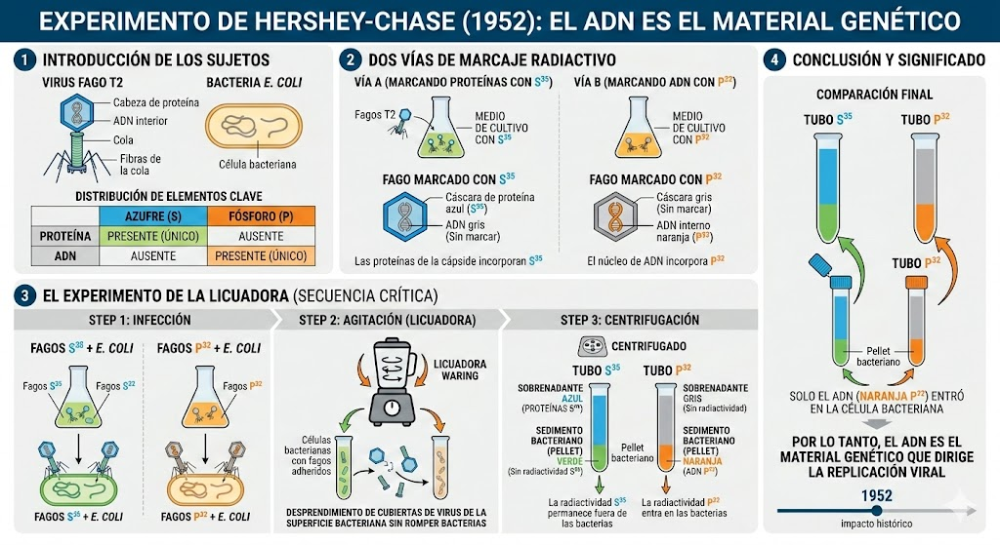
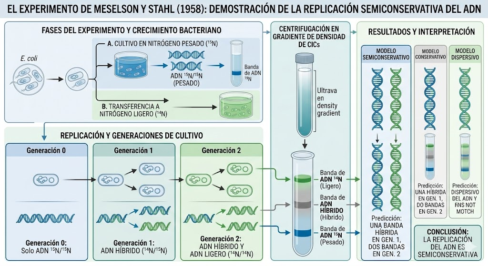

Un debate obstinado
A pesar de que los experimentos previos (como el de Griffith) sugerían fuertemente la existencia de un "principio transformante", hacia la década de 1950 una enorme fracción de la comunidad científica aún se negaba a aceptar que el ADN fuera el portador de la herencia genética. Para la mayoría, aquel misterioso ADN seguía siendo un andamio estructural aburrido, mientras que las majestuosas proteínas, llenas de variedades químicas, eran las verdaderas divinidades de la información biológica.
Para quebrar por completo esta obcecada convicción conservadora, se iba a requerir de un experimento definitivo, uno con un diseño tan aséptico y brutal que el paradigma de las proteínas no pudiera refugiarse jamás en interpretaciones dudosas.
Hershey, Chase y los Bacteriófagos
En 1952, Alfred Hershey y Martha Chase utilizaron como modelo al Bacteriófago T2, un virus que infecta bacterias compuesto exclusivamente de una cápside exterior de proteínas y un núcleo interior puro de ADN. El misterio central era simple: al aterrizar sobre una bacteria, ¿qué sustancia biológica le inyectaba el virus para "secuestrar" su maquinaria?
Para resolverlo, marcaron las proteínas virales con Azufre Radiactivo (S-35) y el ADN viral con Fósforo Radiactivo (P-32). Dejaron que ambos virus atacaran bacterias y, mediante una licuadora de cocina convencional, batieron fuertemente la mezcla para desprender las carcasas virales vacías del exterior bacteriano para luego centrifugar todo.

La caída del dogma: La radiactividad hallada adentro de las bacterias infectadas (sedimentadas en el fondo) provino exclusivamente del fósforo (ADN). Las proteínas se habían quedado afuera como envases vacíos inútiles. El ADN fue coronado definitivamente como la molécula indiscutible de la herencia universal.
Tras la gloria de 1953
Habiendo establecido el reinado del ADN, y tras el descubrimiento de su majestuosa doble hélice por Watson y Crick en 1953, nació otro misterio biológico igual de inmenso. Sabiendo ahora *cómo* era la molécula, la ciencia se obsesionó con responder una pregunta urgente: ¿De qué manera exacta la célula logra copiar esta inmensa biblioteca cada vez que se divide, de forma tan ridículamente exacta que la vida pueda prosperar?
Watson y Crick postularon intuitivamente que, al ser dos hebras complementarias (A-T, C-G), seguramente cada una servía de "molde" para construir a la otra. Sin embargo, esto seguía siendo una bella especulación teórica. Hacía falta empíria dura para comprobar tal mecanismo de copiado.
El choque de los tres modelos
En aquellos años cincuenta, tres hipótesis rivales batallaban furiosamente para convertirse en el nuevo paradigma oficial acerca de cómo la hélice lograba autorreplicarse.
Pesando lo invisible
Para 1958, el físico Franklin Stahl y el genetista Matthew Meselson se conocieron casualmente compartiendo un par de tragos en un laboratorio veraniego de Massachusetts. Allí urdieron uno de los acertijos y planteos de diseño experimental más brillantes de la historia. ¿El desafío? Encontrar empíricamente una forma visual y tangible de distinguir al ojo humano "hebras viejas" de nacientes "hebras nuevas", ya que biológicamente ambas son transparentes y matemáticamente idénticas.
Para resolverlo idearon una estrategia maestra y física infalible: usar el propio "peso atómico" de la materia. Sabiendo lógicamente que el ADN se alimenta de Nitrógeno para fabricar sus hélices moleculares, cultivaron a las bacterias primero en un jugo nutritivo muy raro con Nitrógeno-15 (isotópicamente "pesado"). Naturalmente, las bacterias fabricaron su ADN completamente denso y macizo. Acto seguido las cambiaron drásticamente a un jugo normal de Nitrógeno-14 (sustancialmente "liviano"), por lo que las bacterias, de allí en más, usarían irremediablemente nitrógeno liviano para cualquier estructura clonada que construyeran a futuro.
La Ultracentrifugación Analítica
Aniquilando modelos en tiempo récord
Al sacar los cultivos bacterianos después de transcurrir exclusivamente y puntualmente su primera copia de división (Generación I), iluminaron el tubo plástico liso bajo cámaras ultravioletas, midiendo exactamente dónde reposaba la famosa banda molecular flotando suspendida.

Sorprendentemente, la banda luminosa del ADN no estaba fuertemente hundida y pegada abajo en el fondo pesado, pero absurdamente tampoco estaba flotando liviana arriba. Sorprendiendo empíricamente a los modelos predilectos de aquella era, apareció estacionaria, paralizada mágicamente fluyendo exactamente estancada por su peso en el medio del tubo (mitad pesada N-15, y absurdamente mitad liviana N-14).
Tan sólo este dato físico devastó, calcinó por completo y liquidó velozmente al Modelo Conservativo: si el dogma conservador tradicional hubiera tenido la verdad matemática de su lado, en primer lugar debería asomar sin dudas una marca anclada brutalmente al fondo pesado y violentamente otra marca liviana arriba, sin ningún "híbrido raro de pesos" navegando en la zona del medio y confundiendo existosamente a la comunidad investigadora mundial.
El Experimento Más Bello de la Biología
Sabiendo en el acto que tenían el mundo bajo sus palmas sudorosas, dejaron transcurrir una segunda tanda celular de copia exacta y obtuvieron el sagrado grial: dos radiantes líneas bien separadas aparecieron, una liviana empujada inminentemente hacia arriba y una firme flotante flotante justo al centro exacto del tubo intermedio. Evidencia brutal que asesinó también tajantemente a las pretensiones dispersivas caóticas, las cuales auguraban mezcolanzas indefinidas.
A este trascendental ensayo biológico se lo cataloga oficialmente hasta el cansancio como "El experimento más bello de la biología" (o *The Most Beautiful Experiment*), simplemente por la envidiable brutalidad de su nitidez lógica silogística. Un ensayo que con un mínimo aparato conceptual lógico irrebatible derribaba y cercenaba definitivamente dos colosales paradigmas que competían para la existencia celular teórica de forma apabullante. El hallazgo no es una cuestión meramente semántica o caprichosamente estética; que el modelo sea semiconservativo es el pilar central innegociable ineludible de cualquier existencia evolutiva moderna, de cada curación de la piel desgarrada tras heridas menores, de cada inmenso embarazo embrionario asediado sin errores genéticos en la historia de la vida de este asfixiado planeta biológico.